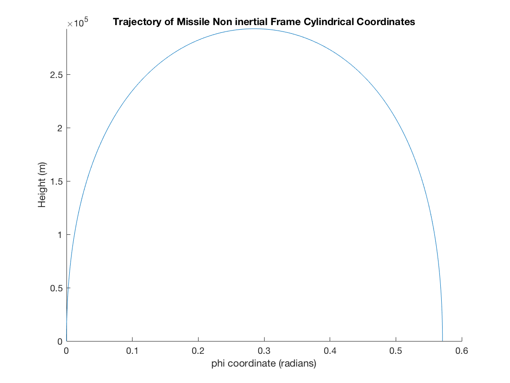
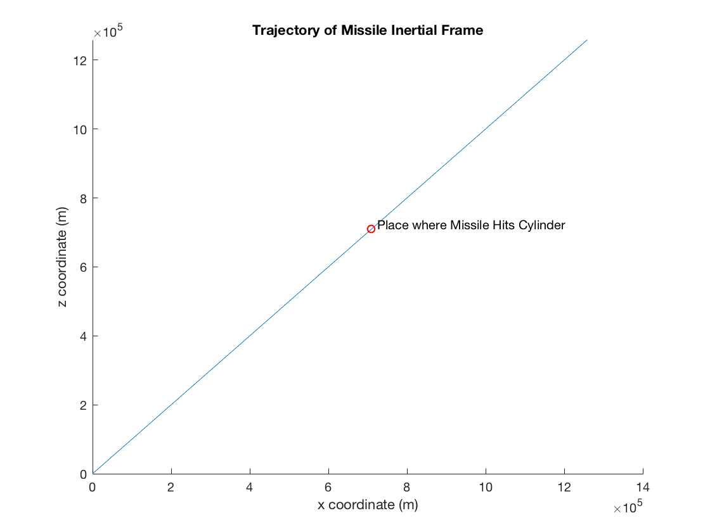
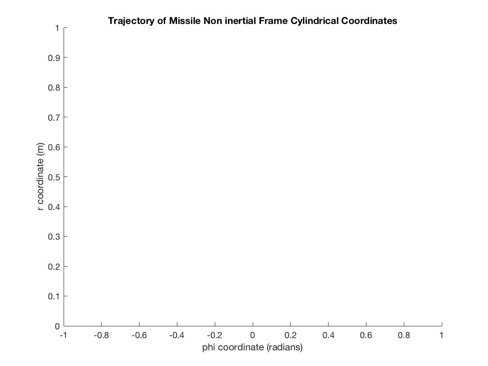
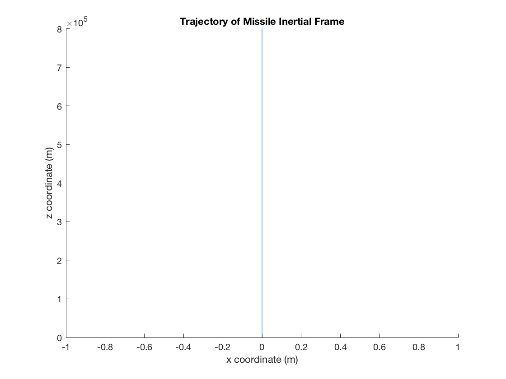

Fowels and Cassidy Problem C 5.1
Luke Polson V00849485
Contents
Part A
Defines all the constants used in the program. Converts all numbers to standard units.
R=1000000; w=0.00314592; launchspeed=w*R;
Differential Equations Non Inertial Frame Solves for phi and r as a function of time given differential equations. y(1) r-position y(2) r-velocity y(3) phi-position y(4) phi velocity
%f = @(t,y) [expression for y(1)'; expression for y(2)';...]
cyltrajecnoniner=@(t,y)[y(2); 2*w*y(1)*y(4)+(w^2+y(4)^2)*y(1); y(4); -2*(y(2)/y(1))*(w+y(4))];
sol1 = ode45(cyltrajecnoniner, [0,500], [R,-launchspeed,0,0]);
spacenoniner = 0:0.1:400;
phi = deval(sol1,spacenoniner,3);
r = deval(sol1,spacenoniner,1);
Differential Equations Inertial Frame Solves for x and z as a function of time given differential equations. We assume no initial y velocity and disregard its position. y(1) x-position y(2) x-velocity y(3) z-position y(4) z velocity
cyltrajeciner=@(t,y)[y(2); 0; y(4); 0]; sol2 = ode45(cyltrajeciner, [0,500], [0,launchspeed,0,launchspeed]); spaceiner = 0:0.1:400; x = deval(sol2,spaceiner,1); z = deval(sol2,spaceiner,3);
Plotting non inertial Reference frame trajectory
figure('name','Part A1','NumberTitle','on'); hold on; title('Trajectory of Missile Non inertial Frame Cylindrical Coordinates') ylabel('Height (m)') xlabel('phi coordinate (radians)') plot(phi,R-r) ylim([0,inf]) hold off;
We observe that the missile reaches a height of approximtately 300km. Consider the trajectory in the inertial frame of reference now. We include the point where the missile hits the cylinder.
Plotting inertial Reference frame trajectory
figure('name','Part A2','NumberTitle','on'); hold on; title('Trajectory of Missile Inertial Frame') ylabel('z coordinate (m)') xlabel('x coordinate (m)') plot(x,z) plot(R/1.41, R/1.41, 'or'); text(R/1.41+R/70,R/1.41+R/70,'Place where Missile Hits Cylinder'); ylim([0,inf]) hold off;
The plot is a straight line which makes sense since there are no external forces acting on the missile in this reference frame. It has the initial x-velocity 'boost' from the rotation of the cylinder and the initial z-velcoity boost from the launch speed.
Part B
Defines More Constants
launchspeed_r = (-2*w*R/pi) launchspeed_phi = -R*w
launchspeed_r = -2.0028e+03 launchspeed_phi = -3.1459e+03
Differential Equations Non Inertial Frame Solves for phi and r as a function of time given differential equations. y(1) r-position y(2) r-velocity y(3) phi-position y(4) phi velocity
cyltrajecnoniner=@(t,y)[y(2); 2*w*y(1)*y(4)+(w^2+(y(4))^2)*y(1); y(4); -2*(y(2)/y(1))*(w+y(4))]; sol1 = ode45(cyltrajecnoniner, [0,500], [R,launchspeed_r,0,launchspeed_phi]); spacenoniner = 0:0.1:200; phi_b = deval(sol1,spacenoniner,3); r_b = deval(sol1,spacenoniner,1);
Differential Equations Inertial Frame Solves for x and z as a function of time given differential equations. We assume no initial y velocity and disregard its position. y(1) x-position y(2) x-velocity y(3) z-position y(4) z velocity
cyltrajeciner=@(t,y)[y(2); 0; y(4); 0]; sol2 = ode45(cyltrajeciner, [0,500], [0,0,0,-launchspeed_r]); spaceiner = 0:0.1:400; x = deval(sol2,spaceiner,1); z = deval(sol2,spaceiner,3);
Plotting non inertial reference frame trajectory
figure('name','Part B1','NumberTitle','on'); hold on; title('Trajectory of Missile Non inertial Frame Cylindrical Coordinates') ylabel('r coordinate (m)') xlabel('phi coordinate (radians)') plot(phi_b,R-r_b) xlim([-1,1]) ylim([0,inf]) hold off;
Plotting inertial Reference frame trajectory
figure('name','Part A2','NumberTitle','on'); hold on; title('Trajectory of Missile Inertial Frame') ylabel('z coordinate (m)') xlabel('x coordinate (m)') plot(x,z) xlim([-1,1]) ylim([0,inf]) hold off;
This time the missile travels up and down in the inertial frame. This is because its x velocity is canceled out between the launch speed and rotation of the cylinder.